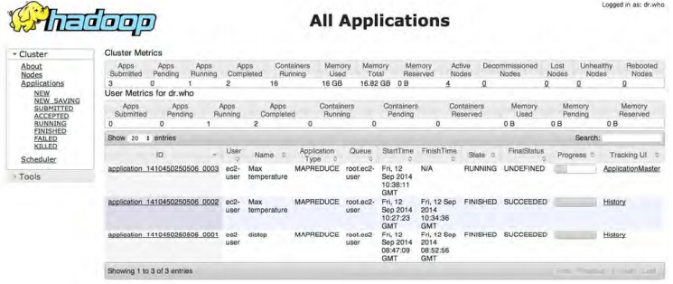
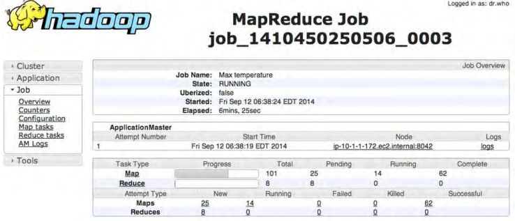
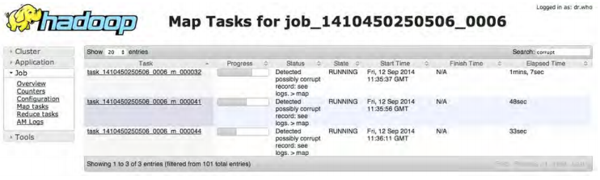

5.在集群上运行(Running on a Cluster)
5.1、打包一个Job（Packing a Job）
本地job runner仅使用一个JVM来运行job，所以只要job需要的所有的类在它的classpath中，就能运行。
在分布式设置中，事情就有点儿复杂了。首先，job的类必须打包到一个job JAR 文件中并发送到集群上。Hadoop会通过在driver的classpath中自动搜寻JAR（包含setJarByClass()方法中的指定类的JAR）来找到job JAR。另外，如果要通过文件路径明确的设置JAR文件，可以使用setJar()方法（JAR文件路径可以是本地路径也可以是HDFS文件路径）。
如果每个JAR文件只有一个job，可以在JAR文件的manifest中指定要运行的main class。如果main class不在manifest中，必须通过命令行指定main class。
任何依赖的JAR文件都可以打包进job JAR文件的lib子目录中，尽管由其它方法来引入依赖。类似的，资源文件可以被打包进classes子目录。（这和Java Web应用项目或者WAR类似，除了JAR文件放在WAR文件的WEB-INF/lib子目录类文件放在WAR文件的WEB-INF/classes子目录）
5.1.1、客户端classpath（The client classpath）
通过hadoop jar <jar>设置的用户的客户端侧classpath由以下组成：
- job JAR文件
- job JAR文件的lib目录中所有JAR文件和classes目录（如果有的话）
- HADOOP_CLASSPATH定义的classpath（如果设置了的话）
这也顺带解释了，使用local job runner而不使用job JAR运行job时（hadoop CLASSNAME），必须要设置HADOOP_CLASSPATH来指向依赖的类和库的原因。
5.1.2、the task classpath
在一个集群中（包括伪分布式模式），map和reduce tasks运行在独立的JVMs中，并且它们的classpaths不受HADOOP_CLASSPATH控制。HADOOP_CLASSPATH是一个客户端侧的设置，它只为提交job的driver JVM设置classpath。
用户的task classpath由以下组成：
- job JAR文件
- job JAR文件的lib目录中所有JAR文件和classes目录（如果有的话）
- 使用-libjars选项、DistributedCache（老API）/Job（新API）的addFileToClassPath()方法添加到分布式缓存的任意文件
5.1.3、打包依赖（Packing dependencies）
打包依赖库的不同方法：
- 把库解压然后打包到job的JAR中
- 把库打包到job JAR文件的lib目录中
- 将库和job JAR文件分离，通过HADOOP_CLASSPATH把它们加到客户端的classpath，或者通过-libjars选项把它们加到task classpath
最后一种方式，使用了分布式缓存，从构建的观点来说是最简单的，因为不需要捆绑到job JAR文件。此外，使用分布式缓存意味着在集群中传输更少的JAR文件，因为文件可能缓存在tasks之间的一个节点上。
5.1.4、Task classpath位次（Task classpath precedence）
客户端classpath和task classpath的末尾都添加了用户的JAR文件，在某些情况下，如果Hadoop使用一个不同的与用户代码使用的库版本不兼容的库，就会引起和Hadoop内置库的依赖冲突。有时需要能够控制task classpath顺序以便首先采用用户的类。在客户端侧，可以通过设置HADOOP_USER_CLASSPATH_FIRST环境变量为true强制Hadoop优先使用用户的classpath。对应task classpath，可以设置mapreduce.job.user.classpath为true。需要注意的是，这些设置改变了为Hadoop框架依赖加载的类，可能潜在的引起job提交失败或者task失败，要谨慎使用。
5.2、启动Job（Launching a Job）
启动job，要运行driver，通过-conf指定要用来运行job的集群：
% unset HADOOP_CLASSPATH
% hadoop jar hadoop-examples.jar v2.MaxTemperatureDriver \
-conf conf/hadoop-cluster.xml input/ncdc/all max-temp
这里 unset HADOOP_CLASSPATH是因为运行的job不需要任何第三方的依赖。如果使用前例遗留的HADOOP_CLASSPATH（即target/classes/），Hadoop将不能找到job JAR。
Job的waitForCompletion()启动job并轮询进度，当map或reduce有改变是写下一行总结。如下为输出（为了简洁，移除了一些行）：
14/09/12 06:38:11 INFO input.FileInputFormat: Total input paths to process : 101
14/09/12 06:38:11 INFO impl.YarnClientImpl: Submitted application
application_1410450250506_0003
14/09/12 06:38:12 INFO mapreduce.Job: Running job: job_1410450250506_0003
14/09/12 06:38:26 INFO mapreduce.Job: map 0% reduce 0%
...
14/09/12 06:45:24 INFO mapreduce.Job: map 100% reduce 100%
14/09/12 06:45:24 INFO mapreduce.Job: Job job_1410450250506_0003 completed
successfully
14/09/12 06:45:24 INFO mapreduce.Job: Counters: 49
File System Counters
FILE: Number of bytes read=93995
FILE: Number of bytes written=10273563
FILE: Number of read operations=0
FILE: Number of large read operations=0
FILE: Number of write operations=0
HDFS: Number of bytes read=33485855415
HDFS: Number of bytes written=904
HDFS: Number of read operations=327
HDFS: Number of large read operations=0
HDFS: Number of write operations=16
Job Counters
Launched map tasks=101
Launched reduce tasks=8
Data-local map tasks=101
Total time spent by all maps in occupied slots (ms)=5954495
Total time spent by all reduces in occupied slots (ms)=74934
Total time spent by all map tasks (ms)=5954495
Total time spent by all reduce tasks (ms)=74934
Total vcore-seconds taken by all map tasks=5954495
Total vcore-seconds taken by all reduce tasks=74934
Total megabyte-seconds taken by all map tasks=6097402880
Total megabyte-seconds taken by all reduce tasks=76732416
Map-Reduce Framework
Map input records=1209901509
Map output records=1143764653
Map output bytes=10293881877
Map output materialized bytes=14193
Input split bytes=14140
Combine input records=1143764772
Combine output records=234
Reduce input groups=100
Reduce shuffle bytes=14193
Reduce input records=115
Reduce output records=100
Spilled Records=379
Shuffled Maps =808
Failed Shuffles=0
Merged Map outputs=808
GC time elapsed (ms)=101080
CPU time spent (ms)=5113180
Physical memory (bytes) snapshot=60509106176
Virtual memory (bytes) snapshot=167657209856
Total committed heap usage (bytes)=68220878848
Shuffle Errors
BAD_ID=0
CONNECTION=0
IO_ERROR=0
WRONG_LENGTH=0
WRONG_MAP=0
WRONG_REDUCE=0
File Input Format Counters
Bytes Read=33485841275
File Output Format Counters
Bytes Written=90
输出包含了很多有用的信息。job开始前，会打印它的ID，在查找这个job相关信息时是有用的，如在日志文件中查找job相关日志，或者通过mapred job命令查询这个job时。job完成时，它的统计数据也全部打印出来。这些信息在验证job时是很有用的。比如，对于这个job，可以看到分析了12亿条记录（Map input records），读取了HDFS上大约34Gb的文件（HDFS: Number of bytes read）。输入被分为101个大小合理gzip文件，所以没有不能切分它们的问题。
在Hadoop 2中，MapReduce job IDs是由YARN资源管理器创建的YARN应用IDs产生出来的。应用IDs由资源管理器（不是YARN应用）启动的时间和资源管理器维护的递增计数器（incrementing counter，用来作为资源管理器实例的应用的唯一身份）组成，所以来看一个应用ID：application_1410450250506_0003，它是资源管理器运行的第三个（0003；应用IDs都是从1开始的）应用，这个资源管理器在时间戳1410450250506启动。计数器以数个0开始使IDs能够美观的排序（例如，在目录列表中）。但是，当计数器达到10000时，它不会重置，而是生成更长的IDs（这是排序就不够美观了）。对应的job ID的产生仅仅是用job前缀替换应用ID的application前缀：job_1410450250506_0003。这个job的tasks的IDs由通过用task前缀替换job ID的job前缀并增加一个象征task在job内部身份的后缀。例如：task_1410450250506_0003_m_000003，它是ID为job_1410450250506_0003的job的第四个（000003；task IDs从0开始）map（m）task。当task初始化的时候为job创建task IDs，所以task IDs不一定代表task执行的顺序。由于task失败或者投机执行（推测执行，speculative execution），task可能执行超过一次，所以为了区分不同task执行实例，task attempts（尝试）被给予了唯一的IDs。例如，attempt_1410450250506_0003_m_000003_0是运行中task attempt_1410450250506_0003_m_000003的第一次（0；attempt IDs从0开始）尝试。在job运行过程中需要的时候会分配task尝试，所以它的ID代表了它被创建执行的顺序。
5.3、The MapReduce Web UI
5.3.1、资源管理器页（The resource manager page）

页面主表显示集群运行过的和正在运行的应用。资源管理器会在一次内存中保存至多10,000条完成的应用（通过yarn.resourcemanager.max-complete-applications设置），在这些记录只在job history page可见之前。job history是持久化的，可以在job history page看到之前运行的jobs。
job history指的是一个完成的MapReduce job的事件和配置。不管job是否成功都会保留。Job history文件被MapReduce application master保存在HDFS中的某个目录中（通过属性mapreduce.jobhistory.done-dir设置）。Job history会保存一周，过期会被系统删除。job history log包括job，task，attempt事件，所有都以json格式保存在文件中。特定job的history可以通过job history server的web UI查看，或者通过使用mapred job -history命令查看。
5.3.2、The MapReduce job page

当job在运行时，可以在这个页面监控它的进度。底部的表格展示了map进度和reduce进度。“Total”显示这个job map或reduce tasks（每个一行）的总数。其它列展示这些tasks的状态：“Pending”（待运行），“Running”，“Complete”。
表格的下面一部分显示map或reduce tasks失败的和killed task attempts。task attempts如果是speculative execution duplicates（推测执行重复）、或者它们正在执行的节点死掉、或者被用户killed就可能被标记为killed。
在导航栏也可以查看“Configuration”等信息。
5.4、获取结果（Retrieving the Results）
% hadoop fs -getmerge max-temp max-temp-local
% sort max-temp-local | tail
1991 607
1992 605
1993 567
1994 568
1995 567
1996 561
1997 565
1998 568
1999 568
2000 558
hadoop fs -getmerge命令获取max-temp目录中的所有文件并把它们合并到本地文件系统max-temp-local目录中的一个文件内。这里用sort命令对输出做了排序。
如果输出很小可以用如下命令查看结果：
% hadoop fs -cat max-temp/*
5.5、Debugging a Job
debug程序的一种历史悠久的方法是打桩输出语句，当然在Hadoop中也是可以的。但是，如果程序运行在成百上千的节点上时，输出语句可能分散在集群的任何节点上。
可以创建自定义的counter来计数输入记录数量。也可以把debug写到map输出。
一个用于debug的例子：
public class MaxTemperatureMapper
extends Mapper<LongWritable, Text, Text, IntWritable> {
enum Temperature {
OVER_100
}
private NcdcRecordParser parser = new NcdcRecordParser();
@Override
public void map(LongWritable key, Text value, Context context)
throws IOException, InterruptedException {
parser.parse(value);
if (parser.isValidTemperature()) {
int airTemperature = parser.getAirTemperature();
if (airTemperature > 1000) {
System.err.println("Temperature over 100 degrees for input: " + value);
context.setStatus("Detected possibly corrupt record: see logs.");
context.getCounter(Temperature.OVER_100).increment(1);
}
context.write(new Text(parser.getYear()), new IntWritable(airTemperature));
}
}
}
如果温度超过100摄氏度（用1000代表，因为温度用十分之一度表示），标准错误输出打印一行错误信息，并用Context的setStatus()方法更新map的状态消息，以指导查看日志。这里也定义了一个counter，在Java中用一个enum类型的属性代表，只定义了一个属性，OVER_100，用来计数超过100摄氏度的记录数量。
5.5.1、tasks和task attempts页面（The tasks and task attempts pages）
job页面有些链接可以用来查看job中tasks的详细信息。例如，点击“Map”链接就跳转到所有的map tasks的列表，如下图：

点击task链接就跳转到task attempts页面，显示task的每个task attempt。每个task attempt 页面都有日志文件和counter的链接。查看某个成功task attempt的日志文件，会看到程序中打印的标准错误输出：
Temperature over 100 degrees for input:
0335999999433181957042302005+37950+139117SAO +0004RJSN V02011359003150070356999
999433201957010100005+35317+139650SAO +000899999V02002359002650076249N0040005...
job完成后，可以查看定义的counter。可以通过Web UI或者如下命令查看counter：
% mapred job -counter job_1410450250506_0006 \
'v3.MaxTemperatureMapper$Temperature' OVER_100
3
-counter选项需要job ID，counter组名（全限定类名），和counter名（即定义的enum名）。从输出可知在所有输入记录中有三个异常输入记录。
5.6、Hadoop日志（Hadoop Logs）
Hadoop在不同地方为不同的受众产生日志：日志种类如下：
| Logs | Primary audience | Description |
|---|---|---|
| System daemon logs | Administrators | 每个Hadoop daemon都产生一个日志文件（用log4j）和合并了标准输出标准错误输出的另一个文件。保存在环境变量HADOOP_LOG_DIR定义的目录中 |
| HDFS audit logs | Administrators | 所有HDFS请求的日志，默认是关闭的。写入到namenode的日志中，但是，是可以配置的。 |
| MapReduce job history log | Users | 运行job过程中发生的事件（如task完成）的日志。保存在HDFS中。 |
| MapReduce task logs | Users | 每个task子进程都会用log4j产生一个日志文件（叫做syslog）、一个发送到标准输出的数据的文件（stdout）、一个标准错误输出文件（stderr）。保存在YARN_LOG_DIR环境变量定义的目录的userlogs子目录中。 |
YARN有一个用于日志聚合（log aggregation）的服务，获取完成应用的日志并把它们移动到HDFS，它们被以存档为目的保存在一个容器文件中。如果开启这个服务（通过设置集群的yarn.log-aggregation-enable为true），就可以通过task attempt web UI的logs链接或者使用命令mapred job -logs来查看task日志。日志聚合服务在应用程序运行结束后，将容器日志转移到 yarn.nodemanager.remote-app-log-dir 对应的 HDFS 目录，所以可以通过 HDFS 直接查看日志文件。
默认是没有开启日志聚合的。这种情况下，可以通过地址http://node-manager-host:8042/logs/userlogs访问node manager的web UI来获取task日志。
可以直接写这些日志文件。任何写到标准输出和标准错误输出的数据都直接写入到相关的日志文件。（当然，在Streaming中，标准输出是用于map或reduce输出的，所以不会在标准输出日志中出现。）
用Java，可以用Apache Commons Logging API（或者任何可以写log4j的API）来写task的syslog。如例 6-13所示：
import org.apache.commons.logging.Log;
import org.apache.commons.logging.LogFactory;
import org.apache.hadoop.mapreduce.Mapper;
public class LoggingIdentityMapper<KEYIN, VALUEIN, KEYOUT, VALUEOUT>
extends Mapper<KEYIN, VALUEIN, KEYOUT, VALUEOUT> {
private static final Log LOG = LogFactory.getLog(LoggingIdentityMapper.class);
@Override
@SuppressWarnings("unchecked")
public void map(KEYIN key, VALUEIN value, Context context)
throws IOException, InterruptedException {
// Log to stdout file
System.out.println("Map key: " + key);
// Log to syslog file
LOG.info("Map key: " + key);
if (LOG.isDebugEnabled()) {
LOG.debug("Map value: " + value);
}
context.write((KEYOUT) key, (VALUEOUT) value);
}
}
默认的日志级别是INFO，所以DEBUG级别的信息不会出现在syslog task日志文件中。通过mapreduce.map.log.level或者mapreduce.reduce.log.level选项，可以改变默认的日志级别。在这里可以进行如下设置以将mapper日志级别设置为DEBUG：
% hadoop jar hadoop-examples.jar LoggingDriver -conf conf/hadoop-cluster.xml \
-D mapreduce.map.log.level=DEBUG input/ncdc/sample.txt logging-out
还有一些控制task 日志保留时间和大小的设置。默认日志会在最少3小时后被删除（通过yarn.nodemanager.log.retain-seconds属性设置，但是如果开启日志聚合会忽略这个属性）。通过mapreduce.task.userlog.limit.kb属性设置每个日志文件的最大大小上限，默认为0即没有上限。
如果要debug一个猜测发生在运行Hadoop命令的JVM而不是集群中的问题。可以用如下命令把console的日志级别设置为DEBUG级别：
% HADOOP_ROOT_LOGGER=DEBUG,console hadoop fs -text /foo/bar
5.7、远端故障排除（Remote Debugging）
集群运行job时，排除远程故障可以采用的一些措施：
- 本地重现故障（Reproduce the failure locally）
- 使用JVM的debugging选项：task JVM常见的一个失败原因是Java out of memory。可以设置mapred.child.java.opts包括-XX:-HeapDumpOnOutOfMemoryError - XX:HeapDumpPath=/path/to/dumps。这个设置会产生一个heap dump文件，可以通过工具jhat或Eclipse Memory Analyzer来检查heap dump分析原因。注意，JVM选项应该加到mapred.child.java.opts指定的内存设置。
- 使用task分析（Use task profiling）：Java profilers提供了很多JVM的洞见，Hadoop提供了一个分析job中tasks子集的机制。
有些情况下，保存失败task attempt的中间结果用于稍后的分析很有用，特别是task的工作目录中创建的supplementary dump或者profile files。通过设置mapreduce.task.files.preserve.failedtasks为true来保存失败task的文件。
如果要检查成功的task，也可以保存成功task的中间文件。设置属性mapreduce.task.files.preserve.filepattern为匹配task IDs的正则表达式。
另一个有用的debug属性是yarn.nodemanager.delete.debug-delay-sec，它控制删除本地task attempt文件（例如用于启动task container JVM的脚本）的等待秒数。如果把这个属性设置为一个合理的比较大的值（例如600——10分钟），那么在这些文件被删除前就有足够的时间查看这些文件。
要查看task attempt 文件，登录task失败的那个节点并查看那个task attempt的目录。文件在一个本地MapReduce目录中，通过mapreduce.cluster.local.dir属性设置这个目录。如果这个属性是逗号分隔的目录集合（将负载分散到机器的所有物理硬盘），那就需要从所有的目录中查找那个特定的task attempt。task attempt在如下位置：
mapreduce.cluster.local.dir/usercache/user/appcache/application-ID/output
/task-attempt-ID
6、Job调试（Tuning a Job）
表 6-3. Tuning checklist
| 方面（Area） | 最佳实践（Best parctice） |
|---|---|
| mappers数量 | mappers运行多久？如果平均每个mappers只运行很短时间（几秒），那么经验法则是：应该考虑是否可以用更少的mappers（平均运行时间长些，比如1分钟）。某种程度上这可能要根据使用的输入格式来确定 |
| reducers数量 | 检验使用了不只一个的reducer。经验法则是：reduce tasks应该运行差不多5分钟并且处理一个block的数据。 |
| combiners | 检验是否job能从使用combiner中获益，从而减少混洗的数据量。 |
| 中间压缩（Intermediate compression） | Job的执行时间总是能够从map输出压缩中受益。 |
| 自定义序列化（Custom serialization） | 如果用了自定义的Writable对象或者自定义的comparators，要确保实现了RawComparator。 |
| 混洗调整（Shuffle tweaks） | MapReduce混洗有很多的内存管理的调试参数，可能会对提升应用性能有帮助 |
6.1、Task分析（Profiling Tasks）
与debug类似，分析运行在分布式系统上的job（比如MapReduce）有一些挑战。随着tasks的完成，可以分析一个job的一小部分tasks，下载分析信息并用标准分析工具分析。
当然，如果可以，更简单的是，分析在local job runner中运行的job。可以用足够多的输入来训练map和reduce tasks，这是提升mappers和reducers性能的有价值的方法。但是有些注意事项。local job runner是与集群环境非常不同的环境，数据流类型也不同。如果MapReduce job是I/O-bound（许多job都是）优化代码的CPU表现是无意义的。要确保调试是有效的，需要比较调试前后在集群上的运行时间。但是也没那么简单，因为job执行时间会随着和其它jobs的资源争夺以及调度器根据task放置做的决定而变化。要确定这种情况下的job执行时间，要进行一系列的运行（有和没有某些改变）并检验做的调整是否具有统计意义。
不幸的是，有些问题只存在于集群环境，所以在集群环境进行分析的能力是必不可少的。
6.2、HPROF分析（The HPROF profiler）
有许多配置属性来控制分析，也可以通过JobConf的方法设置。设置属性mapreduce.task.profile为true即可开启分析：
% hadoop jar hadoop-examples.jar v4.MaxTemperatureDriver \
-conf conf/hadoop-cluster.xml \
-D mapreduce.task.profile=true \
input
cdc/all max-temp
这可以正常的运行，但是给用于启动节点管理器上task容器的Java命令增加了一个-agentlib参数。可以通过设置属性mapreduce.task.profile.params来控制添加的参数。默认使用HPROF，JDK自带的分析工具，尽管是基础的，但是能够给出程序的CPU和堆使用信息。
通常不分析job中的所由task，默认只分析IDs为0、1、2的task（map和reduce都是）。可以通过设置属性mapreduce.task.profile.maps和mapreduce.task.profile.reduces来指定要分析的task IDs范围。
每个task的分析输出保存在节点管理器的本地日志目录的子目录userlogs中（与syslog、stdout、stderr并排），与Hadoop Logs查看相同，根据日志聚合是否开启，可以通过http://node-manager-host:8042/logs/userlogsWeb UI查看。